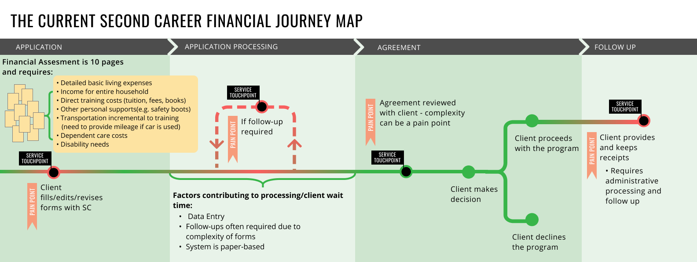
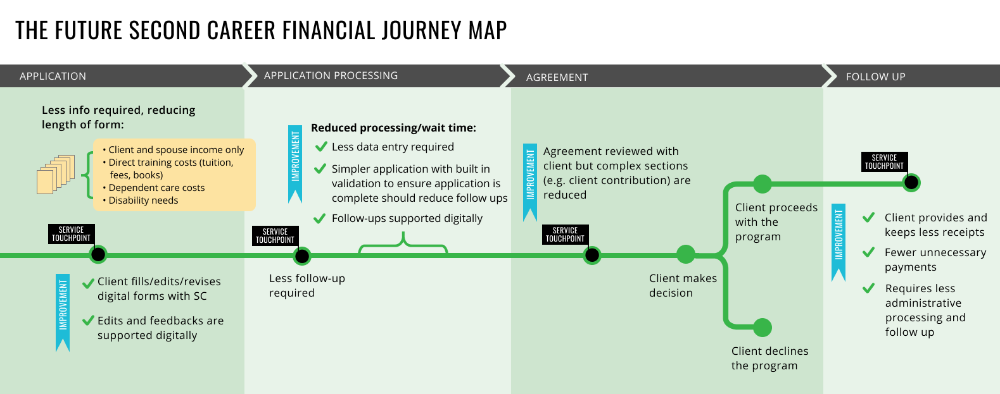
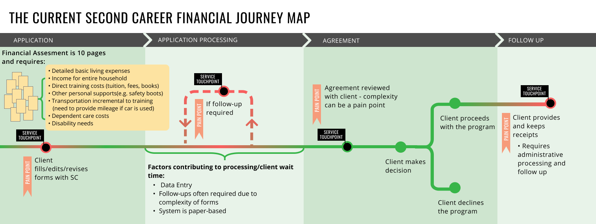
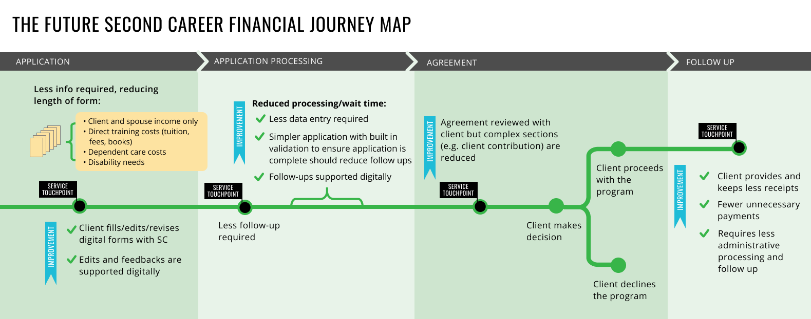
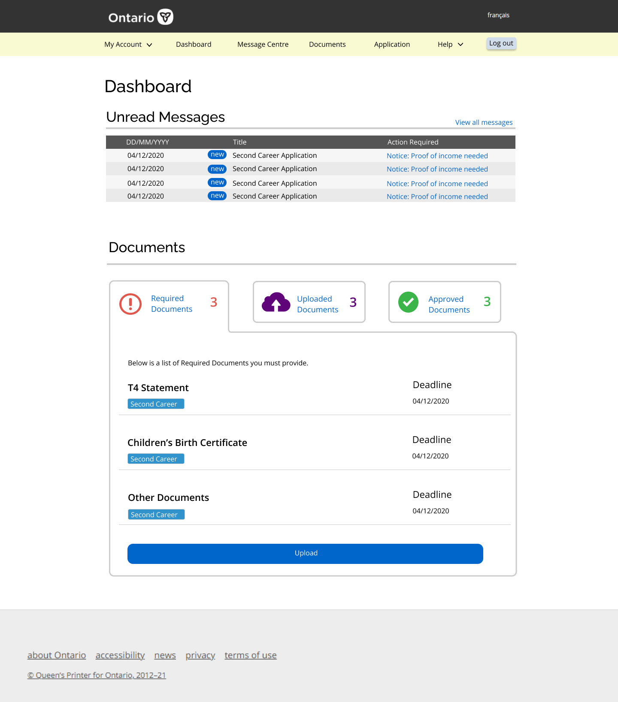
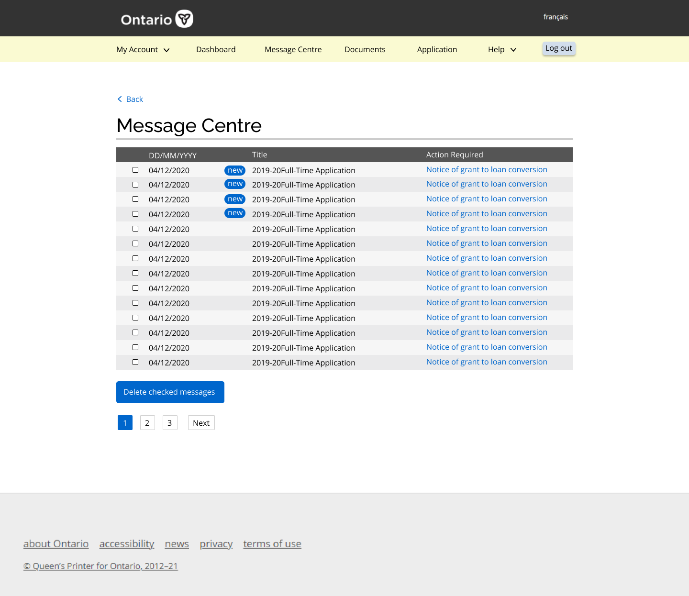
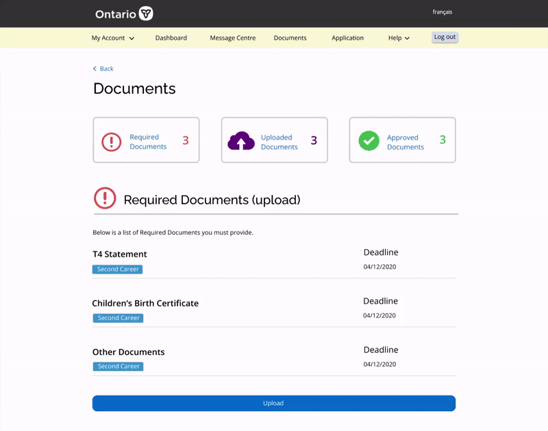
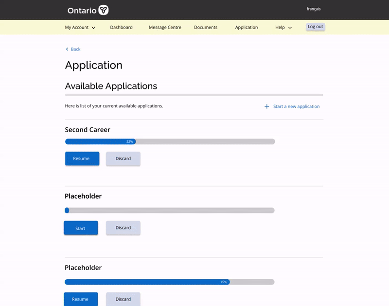

ROLE
UI/UX Designer
SETTING
Team of 2, Iknoor Rawal and me
TIMELINE
January - April 2021
(4 months)
Context
The Digital Business Unit focuses on providing digital solutions to the Ontario Ministry of Labour. One of the many projects I worked on was providing a digital solution to the application process of the Second Career program, the first program to pilot the digital transformation for all Employment Ontario programs.
The Second Career program is targeted toward people who have been laid off in their previous work, and is now looking for new employment. Especially now due to covid, more people than ever are struggling with unemployment. The Second Career program helps equip these people with new skills – those needed for jobs in demand now – and financial support if they qualify.
The Problem
The application process for Employment Ontario programs is extremely long and complicated. With everything done on paper, the applicants need to constantly make appointments and run errands. Some completed applications have over 100 pages of documents!
Research
To better understand our users, their experience with Second Career applications, and their pain points. We conducted a survey as well as user interviews across Second Career participants of Ontario.
Numbers speak. We have a problem.
93.4%
indicated that the most challenging part of the Second Career application process was filling out application forms and documents
77.9%
have had their application forms turned back to them and were asked to make edits/provide follow-ups due to mistakes made in their initial form
60.8%
reflected that the follow-ups and editing of the form after they initially submitted it is frustrating and time-consuming
35.3%
indicated that the process of contacting a service provider worker for support and information was time-consuming
Preliminary Work
After many workshops and meetings with board members, we made a total of 3 user journey maps to understand and represent the users’ experience.
 



Our Solution
Our solution is to digitize the application process by designing an online portal where the entire application process can take place. The portal is also designed with functions such as status tracking and notifications to make the application process much more streamlined and user friendly.
Feature Breakdown: Dashboard
As the name suggests, this is a landing page that performs some key functions of the digital portal, but it mainly leads to the other more specific pages.
It gives a quick overview of the message centre as well as the documents section, which are what we assumed to be the two main purposes to why the applicants would visit this digital portal.
Feature Breakdown: Message Centre
This is where all the messages sent to the applicant resides, listed from most to least recent. New messages are tagged with a new tag. For each message, the applicant will also receive an email notification indicating that they have a new message in their message centre. Applicants can select and delete messages if they wish to do so.
Rationale
This replaces the meetings and appointments that were previously needed for the client to get any feedback on their application. Now, rather than arranging an appointment when amendments are required, the service providers can easily reach the applicant by sending them a message with instructions through the message centre. This saves the applicants a significant amount of time commuting and scheduling appointments with case workers.
Feature Breakdown: Documents
This document page allows the applicant to see the documents that are required, the documents they submitted, and the documents that have been approved laid out clearly and all in one place. The applicants can upload new documents that have been required of them, and indicate a category for the documents they upload, which makes the work of a caseworker much easier! If there are any problems with the submitted documents, the case workers can easily turn the document back to the applicant through the message center and ask for a resubmission.
Rationale
During each application of a program, there can be up to 50 different documentations involved. Gathering and handling this amount of documents in paper is a huge pain and editing is almost impossible. Having a digital portal to store scanned or digital documents is a huge improvement from dealing with over 100 pages of physical documents using folders.
Feature Breakdown: Application

Finally, the goal of the project is to bring the application online, the originally 5 pages application form was converted to 4 sections of digital application. The clients have the ability to save their progress and come back to the application when they want to continue.
The digital form is also responsive to the applicants input. Certain areas of the form that only applies to some people will only appear to them depending on the answers they chose in previous questions.
Rationale
Other than making the application process more streamlined, user friendly and easy to track. The online application will have built-in validation, which ensures the application is complete before the user is able to submit. This greatly increases the success rate of the application on the first try and reduces delays in the application process.
Next Steps
The development teams are planning to work on finishing a MVP(minimum viable product) and launch it in July. The second career program is going to be the fist program to pilot this major digitization of all Employment Ontario programs’ applications. Another next step would be to identify key metrics post-launch, to measure usability and success. This can help us validate or challenge some of the assumptions made during the process.